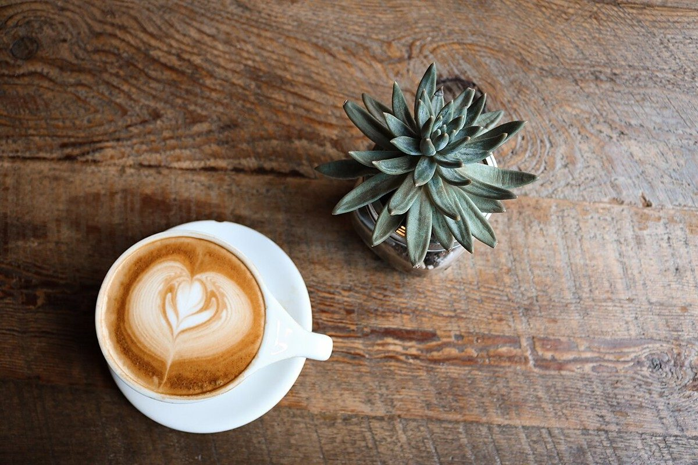
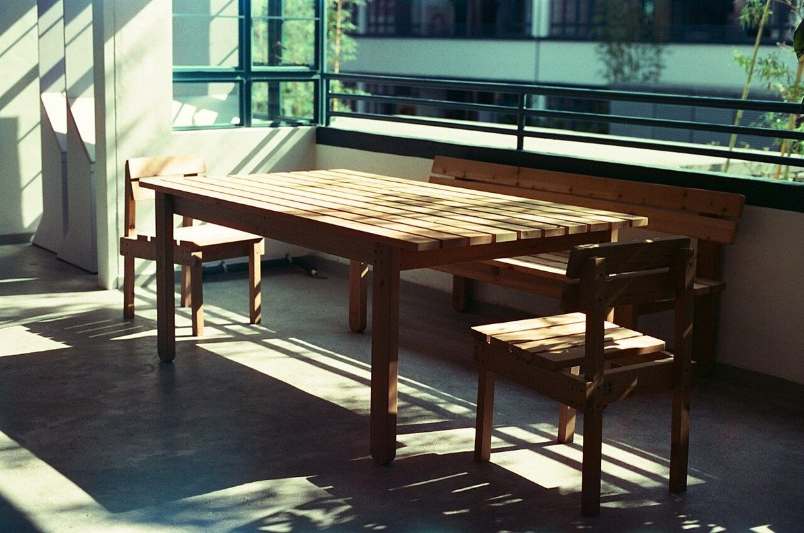

制作側の連想
ワイヤレス充電器の部位を、配置図にしてみる
このサイトは、机に置かれた充電パッドを真上から見た図にしたつもりで作りました。六つの部位に番号をふり、上の図と並べています。制作側の連想で、お店の理念・由来とは無関係です。実在する製品の仕様を示すものでもありません。
凡例
六つの部位
- 1充電面スマートフォンを載せる、平らな上面のパネル。
- 2コイル充電面の下で円を描く、電気を送る銅線の巻き。
- 3位置合わせの輪載せる位置の目安になる、薄い輪の印。
- 4インジケーターライト充電中かどうかを光で伝える、小さな灯り。
- 5滑り止めのゴム足底の縁に回した、ずれを防ぐゴム。
- 6ケーブル端子外から電気を受け取る、ケーブルの差し込み口。
ギャラリー(イメージ)
パンとコーヒー豆の写真


写真はパンとコーヒー豆のイメージです。お店のものではなく、お店で提供している商品を示すものでもありません。
写真帯(イメージ)
カップとテーブルの写真


ご案内
お店のこと(確認できたものだけ)
| 所在地 | 〒328-0037 栃木県栃木市倭町１−２１ |
|---|---|
| 電話 | 準備中 |
| 営業時間 | 準備中 |
| 定休日 | 準備中 |
| ご予約 | 準備中 |
| 駐車場 | 準備中 |
| SNS | Instagram @book_and_cafe_nazna |